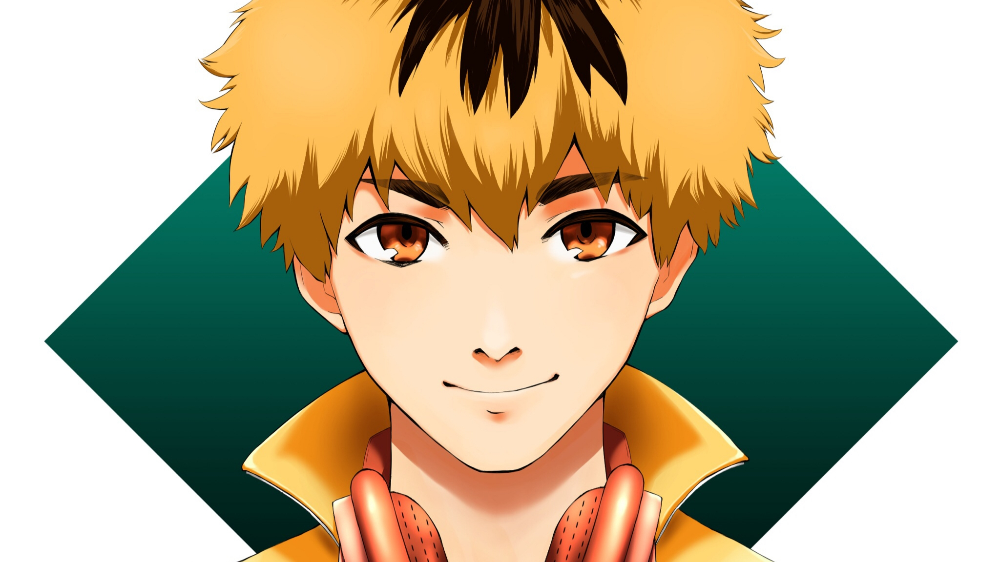

Kaneki Ken
"I'm not the protagonist of a novel or anything. I'm just a college student who likes to read, like you could find anywhere. But... if, for argument's sake, you were to write a story with me in the lead role, it would certainly be... a tragedy."

Touka Nishiki
"What the hell do you know?! It's all because I can't eat, because I could be a target at any time, all because I'm a ghoul! No matter how much I try, there's a wall I can never jump over, and there's happiness that I can never have. But I'm still hanging on to life. Despite it all."

Hideyoshi Nagachika
Hideyoshi Nagachika (永近 英良, Nagachika Hideyoshi), also known as Hide (ヒデ), is a normal human and the best friend of Ken Kaneki.